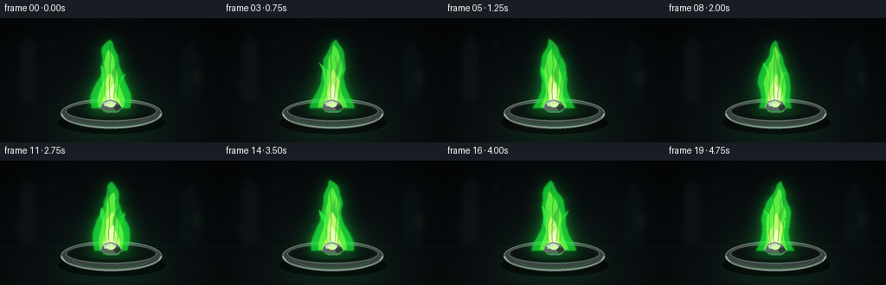
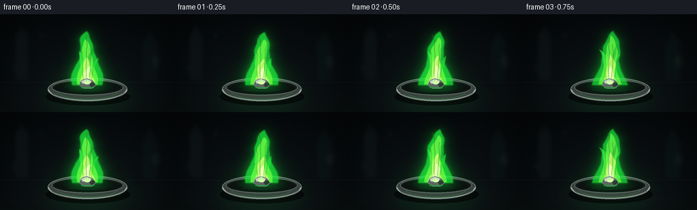

CODING AGENTS AS PIXEL WORLD MODELS
traex/GPT-5.6-Sol · material_0007
点击播放 · 原生 RGB 像素
逐轮保存的候选
回放视频、检查图与代码变化。
每份候选均可单独播放。实际图片检查记录在下方工具轨迹中。
候选 01播放与检查图
点击播放 · 原生 RGB 像素


展开代码变化
--- 上一保存版本
+++ 本次保存版本
@@ -0,0 +1,261 @@
+from pathlib import Path
+import json, math
+import numpy as np
+from PIL import Image, ImageDraw, ImageFilter, ImageChops
+import artifact_io
+
+# Deterministic procedural RGB video. All geometry is rendered at 3x and
+# downsampled for smooth silhouettes and a photographic, shallow-focus look.
+ROOT = Path(__file__).resolve().parent
+SPEC = json.loads((ROOT / "task_spec.json").read_text())
+W, H = SPEC["width"], SPEC["height"]
+N, FPS = SPEC["frames"], float(SPEC["fps"])
+S = 3
+w, h = W*S, H*S
+rng = np.random.default_rng(1703)
+
+
+def sc(v): return int(round(v*S))
+
+def add_colored_light(img, mask, color, strength=1.0):
+ """Add a colored blurred light mask to an RGB image."""
+ a = np.asarray(img, dtype=np.float32)
+ m = np.asarray(mask, dtype=np.float32)[..., None] / 255.0
+ c = np.asarray(color, dtype=np.float32)[None, None, :]
+ a = np.clip(a + m*c*strength, 0, 255)
+ return Image.fromarray(a.astype(np.uint8), "RGB")
+
+
+def alpha_color(mask, color, opacity=1.0):
+ alpha = (np.asarray(mask, dtype=np.float32)*opacity).clip(0,255).astype(np.uint8)
+ layer = Image.new("RGBA", (w,h), tuple(color)+(0,))
+ layer.putalpha(Image.fromarray(alpha, "L"))
+ return layer
+
+
+def polygon_mask(points, blur=0.0):
+ m = Image.new("L", (w,h), 0)
+ ImageDraw.Draw(m).polygon([(sc(x),sc(y)) for x,y in points], fill=255)
+ if blur: m = m.filter(ImageFilter.GaussianBlur(sc(blur)))
+ return m
+
+
+def flame_polygon(frame, top_y, base_y, base_half, phase, lean=0.0, narrow=1.0):
+ # Two coherent, independently perturbed boundaries, sampled from base to tip.
+ levels = 25
+ left, right = [], []
+ for k in range(levels):
+ u = k/(levels-1) # 0 base, 1 tip
+ y = base_y + (top_y-base_y)*u
+ # Width has a strong steady base and a graceful tapered upper flame.
+ taper = max(0, (1-u))**0.62
+ waist = 0.80 + 0.15*math.sin(2.6*math.pi*u + phase*.43)
+ width = base_half*narrow*taper*waist
+ center = 128 + lean*u*u + 2.1*math.sin(phase + 5.3*u) * (u**1.25)
+ center += 0.75*math.sin(phase*1.7 - 9*u)*(0.25+u)
+ lnoise = 1.0*math.sin(13*u + phase*1.31)*(1-u)*u
+ rnoise = 1.1*math.sin(15*u - phase*.87)*(1-u)*u
+ left.append((center-width+lnoise, y))
+ right.append((center+width+rnoise, y))
+ return left + right[::-1]
+
+
+def draw_bezier_wisp(draw, pts, fill, width):
+ # Cubic Bezier polyline.
+ p0,p1,p2,p3 = [np.array(p,float) for p in pts]
+ path=[]
+ for q in np.linspace(0,1,35):
+ p=(1-q)**3*p0+3*(1-q)**2*q*p1+3*(1-q)*q*q*p2+q**3*p3
+ path.append((sc(p[0]),sc(p[1])))
+ draw.line(path, fill=fill, width=sc(width), joint="curve")
+
+
+def background(frame):
+ yy,xx=np.mgrid[0:h,0:w].astype(np.float32)
+ X,Y=xx/S,yy/S
+ # Dark charcoal laboratory; table begins near y=100.
+ upper = np.zeros((h,w,3),np.float32)
+ upper[...,0] = 7 + 5*(Y/H)
+ upper[...,1] = 11 + 7*(Y/H)
+ upper[...,2] = 13 + 8*(Y/H)
+ table = np.clip((Y-99)/45,0,1)
+ upper[...,0] += table*5
+ upper[...,1] += table*8
+ upper[...,2] += table*7
+ # Stable green spill from the chemically characteristic barium flame.
+ pool=np.exp(-(((X-128)/67)**2+((Y-102)/43)**2)*2.0)
+ upper[...,0] += pool*4
+ upper[...,1] += pool*22
+ upper[...,2] += pool*6
+ # soft vignette
+ vig=np.clip(1-0.50*((X-128)/146)**2-0.48*((Y-72)/98)**2,.48,1)
+ upper*=vig[...,None]
+ # Very subtle sensor-like texture fixed in the scene.
+ grain=rng.normal(0,0.75,(h,w,1))
+ upper += grain
+ return Image.fromarray(np.clip(upper,0,255).astype(np.uint8),"RGB")
+
+# Fixed defocused lab details and table texture, reused every frame.
+def make_set_dressing():
+ layer=Image.new("RGBA",(w,h),(0,0,0,0)); d=ImageDraw.Draw(layer,"RGBA")
+ # Out-of-focus vertical apparatus / bottles in the distance.
+ d.rounded_rectangle((sc(21),sc(25),sc(43),sc(99)), radius=sc(5), fill=(20,30,31,95), outline=(56,66,65,30), width=sc(1))
+ d.rectangle((sc(27),sc(16),sc(37),sc(30)), fill=(22,31,32,70))
+ d.rounded_rectangle((sc(207),sc(35),sc(233),sc(101)), radius=sc(8), fill=(11,26,25,90), outline=(40,77,65,25), width=sc(1))
+ d.rectangle((sc(214),sc(24),sc(226),sc(40)), fill=(17,31,30,65))
+ # bokeh glints
+ for x,y,r,a in [(61,31,5,22),(193,19,3,18),(232,69,6,14),(17,79,3,16)]:
+ d.ellipse((sc(x-r),sc(y-r),sc(x+r),sc(y+r)), fill=(74,127,92,a))
+ layer=layer.filter(ImageFilter.GaussianBlur(sc(3.6)))
+ # Table horizon and faint scratches are sharper.
+ sharp=Image.new("RGBA",(w,h),(0,0,0,0)); q=ImageDraw.Draw(sharp,"RGBA")
+ q.line((0,sc(100),w,sc(100)),fill=(61,75,70,35),width=sc(.6))
+ for x0,y0,length,a in [(10,131,48,15),(178,128,61,12),(31,112,35,11),(198,139,40,13),(72,137,28,10)]:
+ q.line((sc(x0),sc(y0),sc(x0+length),sc(y0-.5)),fill=(91,118,101,a),width=1)
+ return Image.alpha_composite(layer,sharp)
+
+SET_DRESSING=make_set_dressing()
+
+
+def draw_dish(frame_img, flicker):
+ # Colored under-light reflected on the bench before the physical dish.
+ reflection=Image.new("L",(w,h),0); rd=ImageDraw.Draw(reflection)
+ rd.ellipse((sc(66),sc(103),sc(193),sc(143)),fill=int(72*flicker))
+ reflection=reflection.filter(ImageFilter.GaussianBlur(sc(14)))
+ frame_img=add_colored_light(frame_img,reflection,(5,52,13),1.0)
+
+ dish=Image.new("RGBA",(w,h),(0,0,0,0)); d=ImageDraw.Draw(dish,"RGBA")
+ # Soft cast shadow.
+ d.ellipse((sc(67),sc(108),sc(191),sc(134)),fill=(0,0,0,145))
+ # shallow refractory ceramic boat, in perspective
+ d.ellipse((sc(70),sc(93),sc(187),sc(127)),fill=(57,65,62,255),outline=(107,120,114,255),width=sc(1.2))
+ d.ellipse((sc(76),sc(96),sc(181),sc(119)),fill=(18,26,23,255),outline=(140,151,145,175),width=sc(1.1))
+ d.ellipse((sc(80),sc(99),sc(177),sc(117)),fill=(11,18,16,255))
+ # white ceramic front lip with green reflected center
+ d.arc((sc(70),sc(92),sc(187),sc(128)),2,178,fill=(182,194,186,210),width=sc(2.2))
+ d.arc((sc(83),sc(101),sc(173),sc(125)),7,171,fill=(72,172,89,135),width=sc(1.0))
+ d.arc((sc(74),sc(96),sc(184),sc(128)),13,167,fill=(102,117,108,190),width=sc(1.0))
+ # soot stains in the bowl
+ for x,y,rx,ry,a in [(111,106,18,4,90),(144,107,22,5,100),(128,111,28,3,70)]:
+ d.ellipse((sc(x-rx),sc(y-ry),sc(x+rx),sc(y+ry)),fill=(3,8,6,a))
+ return Image.alpha_composite(frame_img.convert("RGBA"),dish).convert("RGB")
+
+
+def render_frame(i):
+ t=i/FPS
+ phase=2*math.pi*(t/1.37)
+ # Restrained flicker keeps the burn clearly steady throughout the five seconds.
+ flicker=0.96 + .045*math.sin(phase*1.2) + .025*math.sin(phase*2.7+1.1)
+ frame=background(i)
+ frame=Image.alpha_composite(frame.convert("RGBA"),SET_DRESSING).convert("RGB")
+
+ # Thin smoke/heat trails behind the flame.
+ smoke=Image.new("RGBA",(w,h),(0,0,0,0)); sd=ImageDraw.Draw(smoke,"RGBA")
+ sw=2.0*math.sin(phase*.45)
+ draw_bezier_wisp(sd,[(129,40),(126+sw,26),(143-sw,18),(136+sw,5)],(85,122,97,20),1.6)
+ draw_bezier_wisp(sd,[(122,52),(113+sw,38),(122-sw,25),(116+sw,13)],(65,107,80,14),1.2)
+ smoke=smoke.filter(ImageFilter.GaussianBlur(sc(2.8)))
+ frame=Image.alpha_composite(frame.convert("RGBA"),smoke).convert("RGB")
+
+ frame=draw_dish(frame,flicker)
+
+ top=24 + 2.3*math.sin(phase) + 1.1*math.sin(phase*2.2+.7)
+ lean=4.2*math.sin(phase*.62)+1.4*math.sin(phase*1.8)
+ outer_pts=flame_polygon(i,top,104,27.5,phase,lean)
+ outer=polygon_mask(outer_pts, .55)
+
+ # Broad emerald aura illuminates the laboratory without obscuring the flame.
+ aura=outer.filter(ImageFilter.GaussianBlur(sc(11.0)))
+ frame=add_colored_light(frame,aura,(5,105,20),.88*flicker)
+ halo=outer.filter(ImageFilter.GaussianBlur(sc(4.0)))
+ frame=add_colored_light(frame,halo,(7,75,12),.72*flicker)
+
+ flame=Image.new("RGBA",(w,h),(0,0,0,0))
+ # saturated emerald outer envelope
+ flame=Image.alpha_composite(flame,alpha_color(outer,(25,220,55),.76*flicker))
+
+ # Secondary side tongues, coherent but not identical, create natural combustion.
+ left_pts=flame_polygon(i,54+3*math.sin(phase*1.25),103,13.5,phase+1.8,-13+2*math.sin(phase),.72)
+ right_pts=flame_polygon(i,61+4*math.sin(phase*.9+1),104,14,phase+3.1,14+2*math.sin(phase*.7),.7)
+ lm=polygon_mask(left_pts,.45); rm=polygon_mask(right_pts,.45)
+ flame=Image.alpha_composite(flame,alpha_color(lm,(48,242,64),.72))
+ flame=Image.alpha_composite(flame,alpha_color(rm,(28,226,53),.68))
+
+ # Interior chartreuse body reaches well upward: characteristic apple-green barium.
+ mid_top=34+3.0*math.sin(phase+1.0)
+ mid_pts=flame_polygon(i,mid_top,103,19.2,phase+.55,lean*.72,.92)
+ mid=polygon_mask(mid_pts,.45)
+ flame=Image.alpha_composite(flame,alpha_color(mid,(117,255,69),.72*flicker))
+
+ # Translucent dark-green folds in the outer mantle add volumetric structure.
+ fold_pts=flame_polygon(i,47+3*math.sin(phase*1.1),100,6.5,phase+2.4,lean+8,.86)
+ fold=polygon_mask(fold_pts,.6)
+ flame=Image.alpha_composite(flame,alpha_color(fold,(5,122,42),.34))
+
+ # Bright yellow-green / nearly white core rooted at the metal.
+ core_top=62+3.5*math.sin(phase*1.4+.4)
+ core_pts=flame_polygon(i,core_top,104,13.3,phase+1.0,lean*.3,.9)
+ core=polygon_mask(core_pts,.38)
+ flame=Image.alpha_composite(flame,alpha_color(core,(214,255,118),.82*flicker))
+ hot_pts=flame_polygon(i,76+2*math.sin(phase*1.8),104,8.5,phase+2.2,1.5,.9)
+ hot=polygon_mask(hot_pts,.35)
+ flame=Image.alpha_composite(flame,alpha_color(hot,(242,255,191),.91))
+
+ # Fine, wavering green striations inside the mantle.
+ fd=ImageDraw.Draw(flame,"RGBA")
+ for j,(xoff,yend,a) in enumerate([(-9,53,76),(6,44,68),(-2,30,49),(12,66,58)]):
+ wob=1.8*math.sin(phase*(1.0+.13*j)+j)
+ draw_bezier_wisp(fd,[(128+xoff*.45,99),(126+xoff+wob,82),(130+xoff*.5-wob,67),(128+xoff+wob,yend)],(184,255,102,a),.72)
+
+ frame=Image.alpha_composite(frame.convert("RGBA"),flame).convert("RGB")
+
+ # Barium metal fragment and hot contact point, in front of flame base.
+ metal=Image.new("RGBA",(w,h),(0,0,0,0)); md=ImageDraw.Draw(metal,"RGBA")
+ # irregular metallic piece
+ chunk=[(116,104),(119,97),(127,94),(136,97),(141,104),(135,109),(123,109)]
+ md.polygon([(sc(x),sc(y)) for x,y in chunk],fill=(91,105,96,255),outline=(174,192,179,255))
+ md.polygon([(sc(x),sc(y)) for x,y in [(119,98),(127,95),(135,98),(129,101),(121,102)]],fill=(194,210,197,235))
+ md.polygon([(sc(x),sc(y)) for x,y in [(129,101),(138,100),(140,104),(134,107)]],fill=(39,56,47,245))
+ md.ellipse((sc(123),sc(97),sc(133),sc(103)),fill=(192,255,161,135))
+ md.line((sc(119),sc(108),sc(138),sc(108)),fill=(24,214,59,170),width=sc(1))
+ frame=Image.alpha_composite(frame.convert("RGBA"),metal).convert("RGB")
+
+ # A few tiny incandescent particles. Their tracks are deterministic and sparse.
+ sparks=Image.new("RGBA",(w,h),(0,0,0,0)); pd=ImageDraw.Draw(sparks,"RGBA")
+ particles=[(-1.6,8.5,.15,1.25),(1.3,11,.45,1.0),(-.8,14,.72,.9),(2.0,7.5,.05,.75)]
+ for j,(vx,vy,start,dur) in enumerate(particles):
+ life=((t-start-j*.31)%2.35)
+ if life<dur:
+ x=128 + vx*7*life + 2.5*math.sin(j*2.1+life*3)
+ y=96 - vy*life - 5.5*life*life
+ alpha=int(220*(1-life/dur))
+ r=.8 if j<2 else .55
+ pd.ellipse((sc(x-r),sc(y-r),sc(x+r),sc(y+r)),fill=(205,255,120,alpha))
+ sparkglow=sparks.getchannel("A").filter(ImageFilter.GaussianBlur(sc(1.8)))
+ frame=add_colored_light(frame,sparkglow,(32,140,31),.7)
+ frame=Image.alpha_composite(frame.convert("RGBA"),sparks).convert("RGB")
+
+ # Slight heat shimmer just above the flame: narrow horizontal warping of backdrop/flame.
+ # Kept subtle to preserve coherent object identity frame to frame.
+ arr=np.asarray(frame,dtype=np.uint8).copy()
+ out=arr.copy()
+ for yy0 in range(sc(12),sc(89)):
+ yp=yy0/S
+ amp=(1-(yp-12)/77)*1.15
+ shift=int(round(S*amp*math.sin(phase*.7+yp*.31)))
+ if shift:
+ out[yy0,sc(101):sc(157)] = np.roll(arr[yy0,sc(101):sc(157)],shift,axis=0)
+ frame=Image.fromarray(out,"RGB")
+
+ # Supersampled cinematic result.
+ frame=frame.resize((W,H),Image.Resampling.LANCZOS)
+ return np.asarray(frame,dtype=np.uint8)
+
+
+def main():
+ frames=np.stack([render_frame(i) for i in range(N)],axis=0)
+ artifact_io.save(frames,ROOT)
+ print(f"saved {frames.shape} RGB frames at {FPS:g} fps")
+
+if __name__ == "__main__":
+ main()
可观测工具轨迹
实际执行的命令与返回图片。
命令 1exit 0
/bin/bash -lc "cat prompt.txt && printf '\\n---RULES---\\n' && cat GENERATION_RULES.md && printf '\\n---SPEC---\\n' && cat task_spec.json"
命令 2exit 1
/bin/bash -lc "find . -maxdepth 2 -type f -printf '%p\\n' | sort && printf '\\nTOOLS\\n' && command -v ffmpeg && command -v python3 && ffmpeg -version | head -3"
命令 3exit 0
/bin/bash -lc "cat artifact_io.py && python3 - <<'PY'
import PIL,numpy
print('PIL',PIL.__version__,'numpy',numpy.__version__)
PY
command -v ffmpeg || true"命令 4exit 0
/bin/bash -lc "cat > generate.py <<'PY'
from pathlib import Path
import json, math
import numpy as np
from PIL import Image, ImageDraw, ImageFilter, ImageChops
import artifact_io
# Deterministic procedural RGB video. All geometry is rendered at 3x and
# downsampled for smooth silhouettes and a photographic, shallow-focus look.
ROOT = Path(__file__).resolve().parent
SPEC = json.loads((ROOT / \"task_spec.json\").read_text())
W, H = SPEC[\"width\"], SPEC[\"height\"]
N, FPS = SPEC[\"frames\"], float(SPEC[\"fps\"])
S = 3
w, h = W*S, H*S
rng = np.random.default_rng(1703)
def sc(v): return int(round(v*S))
def add_colored_light(img, mask, color, strength=1.0):
\"\"\"Add a colored blurred light mask to an RGB image.\"\"\"
a = np.asarray(img, dtype=np.float32)
m = np.asarray(mask, dtype=np.float32)[..., None] / 255.0
c = np.asarray(color, dtype=np.float32)[None, None, :]
a = np.clip(a + m*c*strength, 0, 255)
return Image.fromarray(a.astype(np.uint8), \"RGB\")
def alpha_color(mask, color, opacity=1.0):
alpha = (np.asarray(mask, dtype=np.float32)*opacity).clip(0,255).astype(np.uint8)
layer = Image.new(\"RGBA\", (w,h), tuple(color)+(0,))
layer.putalpha(Image.fromarray(alpha, \"L\"))
return layer
def polygon_mask(points, blur=0.0):
m = Image.new(\"L\", (w,h), 0)
ImageDraw.Draw(m).polygon([(sc(x),sc(y)) for x,y in points], fill=255)
if blur: m = m.filter(ImageFilter.GaussianBlur(sc(blur)))
return m
def flame_polygon(frame, top_y, base_y, base_half, phase, lean=0.0, narrow=1.0):
# Two coherent, independently perturbed boundaries, sampled from base to tip.
levels = 25
left, right = [], []
for k in range(levels):
u = k/(levels-1) # 0 base, 1 tip
y = base_y + (top_y-base_y)*u
# Width has a strong steady base and a graceful tapered upper flame.
taper = max(0, (1-u))**0.62
waist = 0.80 + 0.15*math.sin(2.6*math.pi*u + phase*.43)
width = base_half*narrow*taper*waist
center = 128 + lean*u*u + 2.1*math.sin(phase + 5.3*u) * (u**1.25)
center += 0.75*math.sin(phase*1.7 - 9*u)*(0.25+u)
lnoise = 1.0*math.sin(13*u + phase*1.31)*(1-u)*u
rnoise = 1.1*math.sin(15*u - phase*.87)*(1-u)*u
left.append((center-width+lnoise, y))
right.append((center+width+rnoise, y))
return left + right[::-1]
def draw_bezier_wisp(draw, pts, fill, width):
# Cubic Bezier polyline.
p0,p1,p2,p3 = [np.array(p,float) for p in pts]
path=[]
for q in np.linspace(0,1,35):
p=(1-q)**3*p0+3*(1-q)**2*q*p1+3*(1-q)*q*q*p2+q**3*p3
path.append((sc(p[0]),sc(p[1])))
draw.line(path, fill=fill, width=sc(width), joint=\"curve\")
def background(frame):
yy,xx=np.mgrid[0:h,0:w].astype(np.float32)
X,Y=xx/S,yy/S
# Dark charcoal laboratory; table begins near y=100.
upper = np.zeros((h,w,3),np.float32)
upper[...,0] = 7 + 5*(Y/H)
upper[...,1] = 11 + 7*(Y/H)
upper[...,2] = 13 + 8*(Y/H)
table = np.clip((Y-99)/45,0,1)
upper[...,0] += table*5
upper[...,1] += table*8
upper[...,2] += table*7
# Stable green spill from the chemically characteristic barium flame.
pool=np.exp(-(((X-128)/67)**2+((Y-102)/43)**2)*2.0)
upper[...,0] += pool*4
upper[...,1] += pool*22
upper[...,2] += pool*6
# soft vignette
vig=np.clip(1-0.50*((X-128)/146)**2-0.48*((Y-72)/98)**2,.48,1)
upper*=vig[...,None]
# Very subtle sensor-like texture fixed in the scene.
grain=rng.normal(0,0.75,(h,w,1))
upper += grain
return Image.fromarray(np.clip(upper,0,255).astype(np.uint8),\"RGB\")
# Fixed defocused lab details and table texture, reused every frame.
def make_set_dressing():
layer=Image.new(\"RGBA\",(w,h),(0,0,0,0)); d=ImageDraw.Draw(layer,\"RGBA\")
# Out-of-focus vertical apparatus / bottles in the distance.
d.rounded_rectangle((sc(21),sc(25),sc(43),sc(99)), radius=sc(5), fill=(20,30,31,95), outline=(56,66,65,30), width=sc(1))
d.rectangle((sc(27),sc(16),sc(37),sc(30)), fill=(22,31,32,70))
d.rounded_rectangle((sc(207),sc(35),sc(233),sc(101)), radius=sc(8), fill=(11,26,25,90), outline=(40,77,65,25), width=sc(1))
d.rectangle((sc(214),sc(24),sc(226),sc(40)), fill=(17,31,30,65))
# bokeh glints
for x,y,r,a in [(61,31,5,22),(193,19,3,18),(232,69,6,14),(17,79,3,16)]:
d.ellipse((sc(x-r),sc(y-r),sc(x+r),sc(y+r)), fill=(74,127,92,a))
layer=layer.filter(ImageFilter.GaussianBlur(sc(3.6)))
# Table horizon and faint scratches are sharper.
sharp=Image.new(\"RGBA\",(w,h),(0,0,0,0)); q=ImageDraw.Draw(sharp,\"RGBA\")
q.line((0,sc(100),w,sc(100)),fill=(61,75,70,35),width=sc(.6))
for x0,y0,length,a in [(10,131,48,15),(178,128,61,12),(31,112,35,11),(198,139,40,13),(72,137,28,10)]:
q.line((sc(x0),sc(y0),sc(x0+length),sc(y0-.5)),fill=(91,118,101,a),width=1)
return Image.alpha_composite(layer,sharp)
SET_DRESSING=make_set_dressing()
def draw_dish(frame_img, flicker):
# Colored under-light reflected on the bench before the physical dish.
reflection=Image.new(\"L\",(w,h),0); rd=ImageDraw.Draw(reflection)
rd.ellipse((sc(66),sc(103),sc(193),sc(143)),fill=int(72*flicker))
reflection=reflection.filter(ImageFilter.GaussianBlur(sc(14)))
frame_img=add_colored_light(frame_img,reflection,(5,52,13),1.0)
dish=Image.new(\"RGBA\",(w,h),(0,0,0,0)); d=ImageDraw.Draw(dish,\"RGBA\")
# Soft cast shadow.
d.ellipse((sc(67),sc(108),sc(191),sc(134)),fill=(0,0,0,145))
# shallow refractory ceramic boat, in perspective
d.ellipse((sc(70),sc(93),sc(187),sc(127)),fill=(57,65,62,255),outline=(107,120,114,255),width=sc(1.2))
d.ellipse((sc(76),sc(96),sc(181),sc(119)),fill=(18,26,23,255),outline=(140,151,145,175),width=sc(1.1))
d.ellipse((sc(80),sc(99),sc(177),sc(117)),fill=(11,18,16,255))
# white ceramic front lip with green reflected center
d.arc((sc(70),sc(92),sc(187),sc(128)),2,178,fill=(182,194,186,210),width=sc(2.2))
d.arc((sc(83),sc(101),sc(173),sc(125)),7,171,fill=(72,172,89,135),width=sc(1.0))
d.arc((sc(74),sc(96),sc(184),sc(128)),13,167,fill=(102,117,108,190),width=sc(1.0))
# soot stains in the bowl
for x,y,rx,ry,a in [(111,106,18,4,90),(144,107,22,5,100),(128,111,28,3,70)]:
d.ellipse((sc(x-rx),sc(y-ry),sc(x+rx),sc(y+ry)),fill=(3,8,6,a))
return Image.alpha_composite(frame_img.convert(\"RGBA\"),dish).convert(\"RGB\")
def render_frame(i):
t=i/FPS
phase=2*math.pi*(t/1.37)
# Restrained flicker keeps the burn clearly steady throughout the five seconds.
flicker=0.96 + .045*math.sin(phase*1.2) + .025*math.sin(phase*2.7+1.1)
frame=background(i)
frame=Image.alpha_composite(frame.convert(\"RGBA\"),SET_DRESSING).convert(\"RGB\")
# Thin smoke/heat trails behind the flame.
smoke=Image.new(\"RGBA\",(w,h),(0,0,0,0)); sd=ImageDraw.Draw(smoke,\"RGBA\")
sw=2.0*math.sin(phase*.45)
draw_bezier_wisp(sd,[(129,40),(126+sw,26),(143-sw,18),(136+sw,5)],(85,122,97,20),1.6)
draw_bezier_wisp(sd,[(122,52),(113+sw,38),(122-sw,25),(116+sw,13)],(65,107,80,14),1.2)
smoke=smoke.filter(ImageFilter.GaussianBlur(sc(2.8)))
frame=Image.alpha_composite(frame.convert(\"RGBA\"),smoke).convert(\"RGB\")
frame=draw_dish(frame,flicker)
top=24 + 2.3*math.sin(phase) + 1.1*math.sin(phase*2.2+.7)
lean=4.2*math.sin(phase*.62)+1.4*math.sin(phase*1.8)
outer_pts=flame_polygon(i,top,104,27.5,phase,lean)
outer=polygon_mask(outer_pts, .55)
# Broad emerald aura illuminates the laboratory without obscuring the flame.
aura=outer.filter(ImageFilter.GaussianBlur(sc(11.0)))
frame=add_colored_light(frame,aura,(5,105,20),.88*flicker)
halo=outer.filter(ImageFilter.GaussianBlur(sc(4.0)))
frame=add_colored_light(frame,halo,(7,75,12),.72*flicker)
flame=Image.new(\"RGBA\",(w,h),(0,0,0,0))
# saturated emerald outer envelope
flame=Image.alpha_composite(flame,alpha_color(outer,(25,220,55),.76*flicker))
# Secondary side tongues, coherent but not identical, create natural combustion.
left_pts=flame_polygon(i,54+3*math.sin(phase*1.25),103,13.5,phase+1.8,-13+2*math.sin(phase),.72)
right_pts=flame_polygon(i,61+4*math.sin(phase*.9+1),104,14,phase+3.1,14+2*math.sin(phase*.7),.7)
lm=polygon_mask(left_pts,.45); rm=polygon_mask(right_pts,.45)
flame=Image.alpha_composite(flame,alpha_color(lm,(48,242,64),.72))
flame=Image.alpha_composite(flame,alpha_color(rm,(28,226,53),.68))
# Interior chartreuse body reaches well upward: characteristic apple-green barium.
mid_top=34+3.0*math.sin(phase+1.0)
mid_pts=flame_polygon(i,mid_top,103,19.2,phase+.55,lean*.72,.92)
mid=polygon_mask(mid_pts,.45)
flame=Image.alpha_composite(flame,alpha_color(mid,(117,255,69),.72*flicker))
# Translucent dark-green folds in the outer mantle add volumetric structure.
fold_pts=flame_polygon(i,47+3*math.sin(phase*1.1),100,6.5,phase+2.4,lean+8,.86)
fold=polygon_mask(fold_pts,.6)
flame=Image.alpha_composite(flame,alpha_color(fold,(5,122,42),.34))
# Bright yellow-green / nearly white core rooted at the metal.
core_top=62+3.5*math.sin(phase*1.4+.4)
core_pts=flame_polygon(i,core_top,104,13.3,phase+1.0,lean*.3,.9)
core=polygon_mask(core_pts,.38)
flame=Image.alpha_composite(flame,alpha_color(core,(214,255,118),.82*flicker))
hot_pts=flame_polygon(i,76+2*math.sin(phase*1.8),104,8.5,phase+2.2,1.5,.9)
hot=polygon_mask(hot_pts,.35)
flame=Image.alpha_composite(flame,alpha_color(hot,(242,255,191),.91))
# Fine, wavering green striations inside the mantle.
fd=ImageDraw.Draw(flame,\"RGBA\")
for j,(xoff,yend,a) in enumerate([(-9,53,76),(6,44,68),(-2,30,49),(12,66,58)]):
wob=1.8*math.sin(phase*(1.0+.13*j)+j)
draw_bezier_wisp(fd,[(128+xoff*.45,99),(126+xoff+wob,82),(130+xoff*.5-wob,67),(128+xoff+wob,yend)],(184,255,102,a),.72)
frame=Image.alpha_composite(frame.convert(\"RGBA\"),flame).convert(\"RGB\")
# Barium metal fragment and hot contact point, in front of flame base.
metal=Image.new(\"RGBA\",(w,h),(0,0,0,0)); md=ImageDraw.Draw(metal,\"RGBA\")
# irregular metallic piece
chunk=[(116,104),(119,97),(127,94),(136,97),(141,104),(135,109),(123,109)]
md.polygon([(sc(x),sc(y)) for x,y in chunk],fill=(91,105,96,255),outline=(174,192,179,255))
md.polygon([(sc(x),sc(y)) for x,y in [(119,98),(127,95),(135,98),(129,101),(121,102)]],fill=(194,210,197,235))
md.polygon([(sc(x),sc(y)) for x,y in [(129,101),(138,100),(140,104),(134,107)]],fill=(39,56,47,245))
md.ellipse((sc(123),sc(97),sc(133),sc(103)),fill=(192,255,161,135))
md.line((sc(119),sc(108),sc(138),sc(108)),fill=(24,214,59,170),width=sc(1))
frame=Image.alpha_composite(frame.convert(\"RGBA\"),metal).convert(\"RGB\")
# A few tiny incandescent particles. Their tracks are deterministic and sparse.
sparks=Image.new(\"RGBA\",(w,h),(0,0,0,0)); pd=ImageDraw.Draw(sparks,\"RGBA\")
particles=[(-1.6,8.5,.15,1.25),(1.3,11,.45,1.0),(-.8,14,.72,.9),(2.0,7.5,.05,.75)]
for j,(vx,vy,start,dur) in enumerate(particles):
life=((t-start-j*.31)%2.35)
if life<dur:
x=128 + vx*7*life + 2.5*math.sin(j*2.1+life*3)
y=96 - vy*life - 5.5*life*life
alpha=int(220*(1-life/dur))
r=.8 if j<2 else .55
pd.ellipse((sc(x-r),sc(y-r),sc(x+r),sc(y+r)),fill=(205,255,120,alpha))
sparkglow=sparks.getchannel(\"A\").filter(ImageFilter.GaussianBlur(sc(1.8)))
frame=add_colored_light(frame,sparkglow,(32,140,31),.7)
frame=Image.alpha_composite(frame.convert(\"RGBA\"),sparks).convert(\"RGB\")
# Slight heat shimmer just above the flame: narrow horizontal warping of backdrop/flame.
# Kept subtle to preserve coherent object identity frame to frame.
arr=np.asarray(frame,dtype=np.uint8).copy()
out=arr.copy()
for yy0 in range(sc(12),sc(89)):
yp=yy0/S
amp=(1-(yp-12)/77)*1.15
shift=int(round(S*amp*math.sin(phase*.7+yp*.31)))
if shift:
out[yy0,sc(101):sc(157)] = np.roll(arr[yy0,sc(101):sc(157)],shift,axis=0)
frame=Image.fromarray(out,\"RGB\")
# Supersampled cinematic result.
frame=frame.resize((W,H),Image.Resampling.LANCZOS)
return np.asarray(frame,dtype=np.uint8)
def main():
frames=np.stack([render_frame(i) for i in range(N)],axis=0)
artifact_io.save(frames,ROOT)
print(f\"saved {frames.shape} RGB frames at {FPS:g} fps\")
if __name__ == \"__main__\":
main()
PY
python3 generate.py
ls -lh pixels.npz inspection.png transition_check.png index.html frames/00.png frames/19.png"命令 5exit 0
/bin/bash -lc "python3 - <<'PY'
import numpy as np
from PIL import Image
f=np.stack([np.asarray(Image.open(f'frames/{i:02d}.png')) for i in range(20)])
d=np.abs(f[1:].astype(int)-f[:-1].astype(int))
print('shape',f.shape,'range',f.min(),f.max())
print('mean diff overall',d.mean(),'background',d[:,:90,:90].mean(),'flame',d[:,20:110,95:160].mean())
for i in [0,5,10,15,19]:
a=f[i]; print(i, 'mean',a.mean(), 'bright', (a.max(2)>200).sum(), 'green dominance', ((a[:,:,1]>a[:,:,0]*1.4)&(a[:,:,1]>a[:,:,2]*1.25)&(a[:,:,1]>80)).sum())
PY"保存候选 1 份；完成命令 5 次；可验证图片返回 0 张。原始 API 响应与完整日志保留在本地。